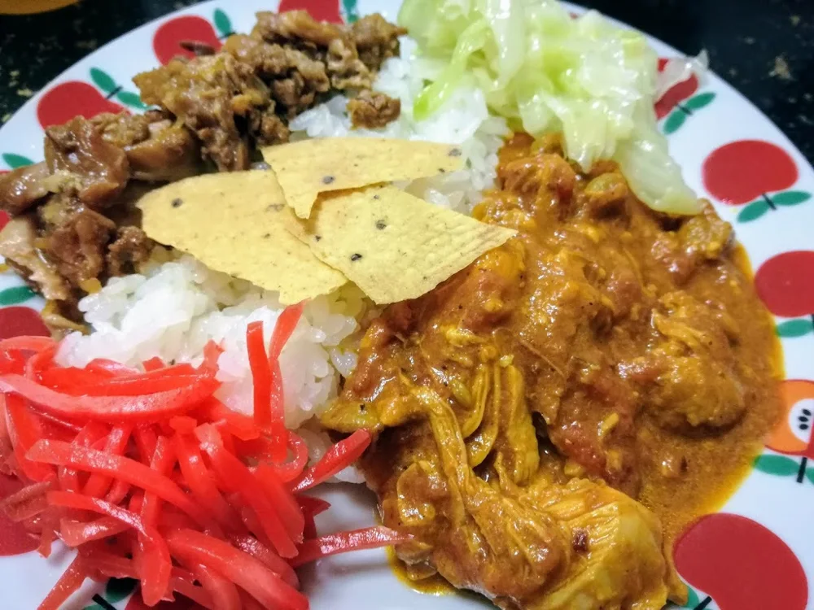
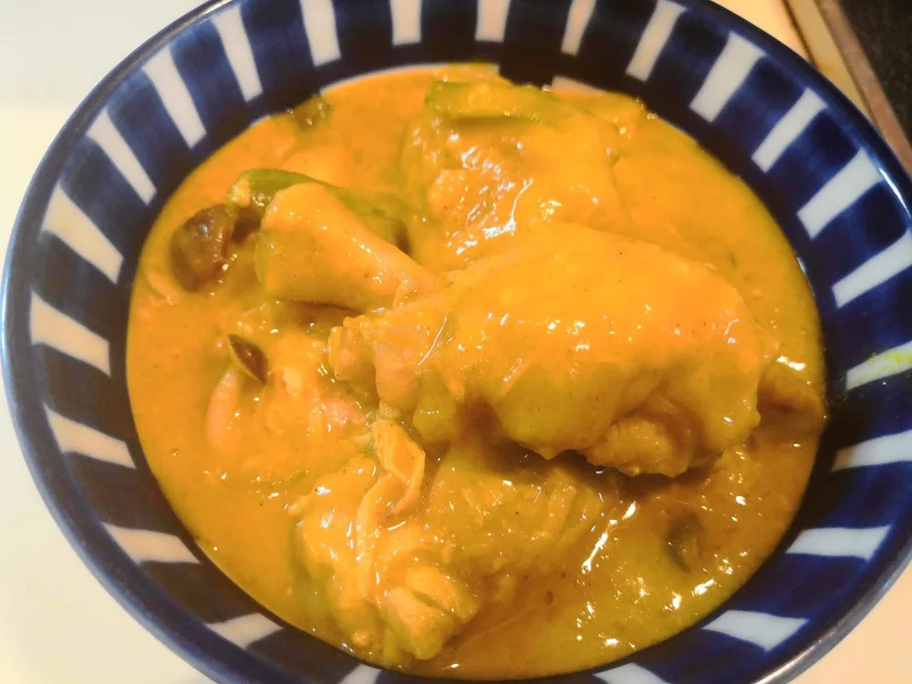

カレー・シチュー
おからパウダー入りインド風チキンカレー
トマトとヨーグルトを使い、仕上げの煮込みでおからパウダーを加える、8人前のチキンカレーです。私がこのカレーで気に入っているのは、スパイシーな
*写真の緑の具材は、元の手羽大根に入っている冷凍いんげんです。* 調理済みの手羽大根を、カレー粉とおからパウダーで和風カレーに作り替える料理です。煮物の甘辛い味わいと鶏の旨みにカレー粉の香りが合い、おからパウダーで、じゃがいもが溶けたあとのカレーのようなもったりしたとろみがつきます。 ### 手羽大根を用意する 2019年7月11日の記事に記録した、8食分の仕込みです。鶏手羽元としめじの旨みを、大根に吸わせて煮ます。下の材料は8食分のままで、カレーに使う3食分へ分量を割り直したものではありません。 - 鶏手羽元：1016g - 大根：1本 - しめじ：2つ（元記事にパック重量の記載はありません） - 冷凍いんげん：150g - 水：200ml（使う圧力鍋の指定を優先します） - 和風だしの素：大さじ1 - 酒：大さじ4 - 醤油：大さじ4 - エリスリトール：大さじ1.5（砂糖の場合は大さじ1程度） **圧力鍋は、製品の最低水量・容量・使用法を必ず優先してください。** 記録の水200mlは、すべての圧力鍋で安全に使える量を示すものではありません。材料全体が製品の調理上限を超えないことも、加熱前に確かめましょう。 1. 大根は乱切りにします。別の鍋に湯を沸かし、鶏手羽元を軽く下ゆでして、アクや汚れを洗い流します。生肉やゆで汁の飛沫が、調理台や周りの食品にかからないよう注意してください。 2. 圧力鍋に大根、下ゆでした鶏手羽元、水、酒、エリスリトール（または砂糖）を入れ、強火にかけます。水量は製品の最低水量を下回らないようにします。 3. 沸騰したらアクを取り、製品の使用法に従って蓋をし、10分加圧します。 4. 圧が下がったことを確かめてから、製品の使用法に従って蓋を開けます。和風だしの素、醤油、しめじ、冷凍いんげんを加え、中火で10分煮ます。鶏肉の中心まで十分に火が通っていることを確かめてください。 大根やきのこ、いんげんからも水分が出るので、最後に味見をして調整します。できあがった8食分のうち、カレーには煮汁と一緒に3食分を使います。

醤油と和風だしの素を加える時点は、元記事の作り方に指定がありません。煮込みながら加え、味見をして調えてください。
写真の緑の具材は、元の手羽大根に入っている冷凍いんげんです。
私は2019年7月、たっぷり作った手羽大根を、食べ飽きないよう和風カレーに作り替えました。カレーの香りでおからのにおいも和らぎ、手羽も大根もカレーによく合いました。
ここでは、できあがった手羽大根のうち3食分を使います。先に載せている8食分の手羽大根の仕込みと、3食分を使うカレーの分量は、分けて考えてください。
とろみのつき方は、手羽大根の煮汁の量で変わります。おからパウダー大さじ7を一律に加えるのではなく、混ぜたあとの口当たりを確かめて調整します。
煮込む時間の5分程度は、元記事の目安です。保存していた煮物を使うので、時間だけで判断せず、全体を十分に再加熱することを優先してください。
和風だしの香りがあるので、カレーうどんに使うのもおすすめです。
加熱時間は作った時の目安です。容器や調理器具によって仕上がりは変わります。中心まで火が通っていることを確認してください。
手羽大根を使う和風カレー（リメイク）の材料・作り方（50kgdiet.com） →
このページは書籍の改訂原稿をもとに掲載しています。元記事は過去の記録のため、材料や表現が異なる場合があります。